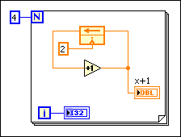
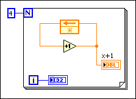

The Feedback Node, shown as follows, operates similarly to shift registers in loops.
Like a shift register, the Feedback Node stores data when the loop completes an iteration and then sends the stored data to the next loop iteration. The next iteration reads the data, writes a new value to the data, and sends it through the loop again. This process continues until the loop execution completes.
When the Feedback Node reinitializes after the first execution, the values for each loop iteration from one execution to another do not change. In this case, wire an initializer terminal to the Feedback Node, as shown in the following block diagram.

| First Execution | Second Execution | ||
|---|---|---|---|
| Iteration | End Value | Iteration | End Value |
| 0 | 3 | 0 | 3 |
| 1 | 4 | 1 | 4 |
| 2 | 5 | 2 | 5 |
| 3 | 6 | 3 | 6 |
The Feedback Node behaves differently if you do not wire an initial value to the initializer terminal, shown as follows.

| First Execution | Second Execution | ||
|---|---|---|---|
| Iteration | End Value | Iteration | End Value |
| 0 | 1 | 0 | 5 |
| 1 | 2 | 1 | 6 |
| 2 | 3 | 2 | 7 |
| 3 | 4 | 3 | 8 |
In the previous block diagram, the initializer terminal uses 0, the default value for the data type, as the initial value in the first execution and does not reinitialize the Feedback Node in any subsequent executions.
Although you can separate the node and initializer terminal in loops and nested loops, you cannot move the initializer terminal outside the set of nested structures that contains the node. You also cannot separate the node from the initializer terminal when you create a subVI. If you attempt to create a subVI from a section of the block diagram that contains either the node or the initializer terminal, but not both, LabVIEW returns an error.
 |
Note��You can use the Appearance page of the Properties dialog box to change the appearance of a Feedback Node to z-transform view, which looks like that of a z-1 block in feedback control theory and signal processing. Changing the node to z-transform view changes only the cosmetic appearance of the Feedback Node and does not change the functionality of the node. |